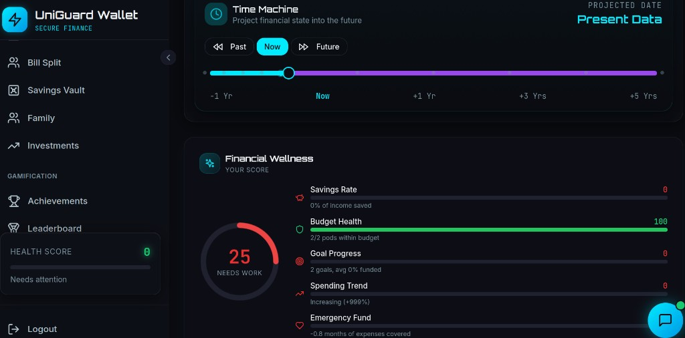

UniGuard expense tracker is an AI-driven personal finance system designed to help youth and the general public budget, track spending, and build lasting savings habits.
The platform combines smart budgeting with AI models for spending insights and anomaly detection, and gamified financial literacy to make money management engaging and accessible. It caters for users with varying financial goals from daily expenses to long-term savings.
Youth and the general public in Uganda face financial stress and debt partly because existing tools do not fit their needs. Most apps are either fully manual (tedious data entry), delayed (no real-time insights), or not built for local contexts (irregular income, small amounts). There is no single platform that combines smart budgeting, AI-powered spending insights, and gamified financial learningleaving users without practical tools to build good money habits.
- Develop a smart budgeting web app with Budget Ports (category-based budgets), Goals (savings targets), and real-time transaction tracking.
- Integrate Document Text Recognition-based receipt OCR, Anomaly Detector, Transaction Categorizer, Recurring Detector, Spending Forecaster, Budget Allocator, and Goal Predictor for automated insights.
- Deliver gamified financial literacy through achievements, leaderboards, and an AI Companion for personalized advice and spending recommendations.
- Dashboard, Budget Ports, Goals
- Time Machine simulator
- Receipt Scanner UI (upload & display)
- AI Companion chat interface
- Reports & Analytics views
- Achievements, Leaderboard
- Bill splitting, Savings vault
- Family finance, Investment tracking
- Transaction entry, Real-time alerts display
- Gamified financial literacy UI
- Flask REST API
- DocTR OCR (receipt parsing)
- Supabase Database (auth, storage)
- Anomaly Detector (Random Forest/Decision Tree)
- Transaction Categorizer (Term Frequency-Inverse Document Frequency + Random Forecast)
- Recurring Detector
- Spending Forecaster
- Budget Allocator
- AI Companion logic
Users enter data by manually adding transactions or scanning receipts; the frontend sends this to the backend, where DocTR OCR parses receipt images Anomaly Detector, Categorizer, Recurring Detector, Forecaster, Allocator, Goal Predictor process the data, store results in Supabase, and surface insights budget status, alerts, forecasts, and goal progress on the live dashboard.

Anomaly Detector:
We used synthetic UGX transactions (96000 records). For each user and category, we computed amount_ratio = amount ÷ median amount in that category. This makes the model compare spending to the user’s own habits, not global averages. Anomalies were labeled as the top or bottom 3% by amount_ratio per user-category. We then encoded transaction type, category, and payment mode, and scaled amount_ratio for the model.
Transaction Categorizer:
We used 122000 text descriptions with 8 categories. We cleaned the text by converting to lowercase, removing numbers and prices (e.g. "4k", "500"), removing special characters, and dropping common words like "the", "on", "for". The cleaned text was turned into numbers using TF-IDF with single words and word pairs (bigrams) so the model could learn patterns like "spent fuel".
Trained models
- Recurring Detector: Scans history for repeated amounts, dates, merchants; identifies subscriptions and bills.
- Spending Forecaster: Uses past spending by category to estimate future spend, trends, and days until budget depletes.
- Budget Allocator: Suggests income split across categories and goals using history and income.
- Goal Predictor: Estimates chance of reaching savings goals by deadline using balance and contributions.
Model Comparison:
| Model | Type | Input | Output | Metric |
|---|---|---|---|---|
| Anomaly Detector | RF / DT / IsoForest | Tx, amount_ratio, category | Alerts | RF 72% acc, DT 70% |
| Categorizer | TF-IDF + RF | Description, Amount | Category | 100% acc, P/R 1.0 |
| Recurring Detector | Logic | History | Predictions | — |
| Spending Forecaster | Logic | History | Forecast | — |
| Budget Allocator | Logic | Income, Goals | Allocation | — |
| Goal Predictor | Logic | Goals, Contributions | Completion | — |
- Logic-based models; ML training for anomaly in pipeline.
- Mobile money API integration for automated transaction sync.
- Beta testing with UCU students and general public; expansion to broader deployment.
UniGuard Digital Wallet is a fully deployed AI-powered personal finance system that helps youth and the general public manage money confidently. Combining smart budgeting, DocTR receipt scanning, 6 AI models, and gamified learning delivers practical value and lasting financial impact.
https://github.com/mindee/doctr.
https://www.kaggle.com/models/mohamedhanfi/anomaly-detection/.
https://huggingface.co/datasets/mitulshah/transaction-categorization.